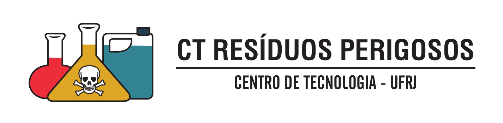

Segurança Química e Ambiental · NBR 10.004
Gerenciamento de resíduos Classe I e conformidade legal nos laboratórios do CT.
Tópicos do CT Resíduos Perigosos
Cards com imagem, resumo e acesso à página completa de cada tema.
☣️ Segurança e Gestão de Resíduos Perigosos
O CT Resíduos Perigosos é o programa responsável pelo gerenciamento ambientalmente adequado de resíduos químicos e materiais de risco biológico e hospitalar gerados nos laboratórios do CT e CCMN.
Criado em 2012, o programa garante o cumprimento da norma técnica NBR 10.004/2004 para resíduos Classe I, providenciando armazenamento temporário seguro, controle de inventários, treinamento de pessoal e destinação de passivos químicos.
📜 Linha do Tempo
- 🕒 2012: Criação sob a portaria original de destinação responsável.
- 🕒 2013: Início do recolhimento de passivos químicos líquidos laboratoriais.
- 🕒 2015: Logística reversa para recolhimento de pilhas e baterias de lítio.
- 🕒 2017: Mutirão de descarte seguro, destinando 21 toneladas de resíduos químicos industriais.
- 🕒 2026: Proposta de Casamata Física e Digital integrada e Bolsa de Reagentes.
🔄 Ciclo de Gestão do Resíduo Químico
Dinamismo interativo: entenda o fluxo de recolhimento de materiais Classe I do laboratório à incineração industrial.
1. Geração no Lab
O resíduo químico é gerado durante as aulas práticas ou pesquisas laboratoriais.
☣️ Classificação de Riscos (NBR 10.004)
Os resíduos Classe I possuem propriedades que representam ameaças diretas à saúde pública e ao ecossistema. São classificados com base em cinco características principais:
- 🔥 Inflamabilidade: Solventes como acetona, etanol e benzeno que evaporam e inflamam facilmente.
- ⚗️ Corrosividade: Ácidos e bases concentrados (como HCl, NaOH) capazes de corroer metais e tecidos vivos.
- 💥 Reatividade: Substâncias instáveis que reagem violentamente com água ou liberam gases tóxicos.
- ☠️ Toxicidade: Compostos cianídricos, metais pesados e carcinogênicos.
- 🦠 Risco Biológico: Amostras de sangue, seringas e agulhas contaminadas de enfermaria.
🏭 Estrutura da Casamata
A Casamata física é uma área fortificada de segurança, dividida em setores contendo bacias de contenção para evitar derramamento de:
- 🧪 Solventes halogenados e não-halogenados
- 🧪 Ácidos minerais fortes
- 🧪 Reagentes alcalinos
- 💡 Lâmpadas de mercúrio e pilhas ácidas
📸 Exemplos de Resíduos Perigosos
Conheça a variedade de resíduos gerenciados pelo programa e identifique a categoria correta antes de solicitar a coleta.
🔥 Inflamáveis
Líquidos que entram em ignição facilmente. Exemplos: Álcool etílico, acetona, hexano, benzeno, tintas e solventes. Devem ser armazenados longe de fontes de calor.
⚗️ Corrosivos
Substâncias que desgastam materiais e causam queimaduras. Exemplos: Ácido sulfúrico, ácido clorídrico, soda cáustica (hidróxido de sódio).
☠️ Tóxicos
Apresentam riscos severos à saúde se inalados, ingeridos ou absorvidos. Exemplos: Compostos de chumbo, mercúrio, cianetos, agrotóxicos e resíduos químicos gerais.
💥 Reativos e Explosivos
Reagem violentamente, muitas vezes com água ou ar. Exemplos: Sódio metálico, peróxidos orgânicos, nitrato de amônio. Exigem isolamento máximo.
🦠 Infectantes (Biológicos)
Materiais que contêm patógenos. Exemplos: Placas de Petri com culturas, seringas, agulhas, luvas contaminadas. Devem ir para caixas Descarpack.
💡 Especiais (Lâmpadas/Pilhas)
Possuem metais pesados e necessitam de logística reversa. Exemplos: Lâmpadas fluorescentes tubulares, pilhas alcalinas, baterias automotivas.
🧪 Bolsa de Reagentes Compartilhada
Antes de descartar um reagente lacrado ou em boas condições de uso, disponibilize-o para adoção por outros laboratórios da UFRJ, evitando custos extras de compra e descarte.
Reagentes Disponíveis para Adoção
| Descrição do Reagente | Fórmula | Quantidade | Laboratório Doador | Ação |
|---|
⚗️ Verificador de Compatibilidade Química
Selecione duas classes de reagentes para verificar o nível de periculosidade de uma mistura acidental ou segregação inadequada.
🧼 Guia de Limpeza de Recipientes
Antes de solicitar a coleta de frascos de reagentes vazios, realize a descontaminação básica (tríplice lavagem se aplicável) e atenda aos seguintes critérios:
- ✔️ Recipientes vazios e sem resíduos químicos aderidos nas paredes.
- ✔️ Tampas contaminadas substituídas e frascos vedados.
- ✔️ Rótulos antigos rasgados ou riscados para evitar confusões de risco.
🏥 Descarte de Resíduos Hospitalares
Resíduos biológicos e perfurocortantes (seringas, agulhas, lâminas) gerados em primeiros socorros exigem descarte rígido em caixas coletoras estanques (Descarpack) identificadas.
⚗️ Recuperação de Solventes
O CT planeja restabelecer o laboratório integrado de destilação para recuperação de solventes orgânicos saturados de laboratórios acadêmicos, gerando economia institucional e diminuindo o passivo gerado.
- ♻️ Redução de até 40% na compra de novos reagentes solventes.
- ♻️ Diminuição de resíduos orgânicos Classe I para incineração.
🚨 Procedimentos de Acidentes Químicos
Protocolos de segurança rápidos para contenção de derramamentos ou frascos quebrados.
- ⚠️ Evacue a área: Avise os colegas e afaste-se do ponto do derramamento.
- ⚠️ Equipe de EPI: Coloque óculos, luvas de nitrila pesadas e avental.
- ⚠️ Contenção: Utilize o kit de contenção de derramamentos (areia seca, vermiculita ou absorvente neutro).
- ⚠️ Notifique: Comunique a coordenação ambiental do CT para verificação.
- ⚠️ Não toque diretamente: Nunca recolha cacos de vidro contaminado por reagentes com as mãos.
- ⚠️ Utilize pás de plástico: Use ferramentas manuais de plástico para recolher os cacos e o reagente absorvido.
- ⚠️ Descarte Rígido: Deposite os fragmentos em recipientes plásticos rígidos e identifique o frasco como perigoso.
👨🔬 Estágios e Capacitação
O CT Resíduos Perigosos atua como polo de treinamento prático e acadêmico para graduandos dos cursos de Química, Engenharia Química, Farmácia, Engenharia Ambiental, Engenharia de Bioprocessos e Segurança do Trabalho.
Os extensionistas e estagiários aprendem na prática sobre classificação de periculosidade, inventários de compatibilidade química, logística reversa industrial e gerenciamento de passivos de saúde pública.
📚 Biblioteca de Segurança
Documentação técnica fundamental para download: